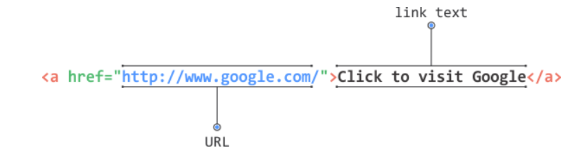

Una dintre funcţionalităţile de bază ale limbajului HTML este posibilitatea de legare reciprocă a documentelor care se creează. Acest lucru se poate concluziona pe baza denumirii acestui limbaj: HyperText Markup Language. În lecţia introductivă a acestui curs am spus că noţiunea de Hypertext se referă la modul în care paginile HTML sunt reciproc legate prin linkuri care direcţionează la alte documente HTML. De aceea, putem trage concluzia că linkurile sunt mecanismul de bază pentru legarea mai multor documente HTML.
În limbajul HTML, linkurile se definesc prin utilizarea tagului <a>, ca în exemplul următor:
<a href="http://www.google.com/">Click to visit Google</a>
Structura linkului creat se poate prezenta cu imaginea de mai jos
URL (engl. Uniform Resource Locator) este adresa unei resurse pe web. Exemplul unui URL poate arăta astfel:
http://www.mysite.com:80/bookstore/book.html?id=1
Adresele URL pot apărea în două forme, ca adrese:
Adresa absolută este adresa completă până la resursă.
Adresa relativă este cea care se bazează pe o altă adresă. Astfel, o adresă relativă ar putea fi şi:
bookstore/book.html
Pentru a ajunge dintr-un folder la folderul radacina se va utiliza ../ pentru fiecare folder parinte spre exemplu
-folder1
-folder2
-folder3
-folder4
pentru a ajunge sa facem link catre un fisier index.html din folderul 3 intr-un fisier aflat in folderul 4 link-ul va fi urmatorul: ../../folder3/index.html iar pentru a ajunge in fisierul root link-ul va fi ../../../
Din întreaga poveste despre adresele relative şi cele absolute în cadrul linkurilor, putem concluziona câteva lucruri. În timpul creării site-urilor sau aplicaţiilor, întotdeauna se recomandă utilizarea adreselor relative în cadrul linkurilor. O astfel de abordare simplifică semnificativ procesul de publicare şi facilitează dezvoltarea. Având în vedere că dezvoltarea şi producţia se efectuează, în general, pe diferite calculatoare, utilizarea adreselor absolute complică semnificativ publicarea aplicaţiei pe serverul de producţie. Să vedem acest lucru pe un exemplu. În timpul dezvoltării, aplicaţia se află pe următorul domeniu (fully qualified domain name):
Elementul <a> poate avea un atribut opţional numit atribut target, care defineşte modul în care se va activa linkul. Atributul target poate avea una dintre valorile de mai jos:
Linkul se poate crea şi în aşa fel încât să indice adresa de e-mail. Astfel de linkuri, în loc să deschidă pagina, pornesc un program de e-mail implicit. De exemplu, dacă se foloseşte Microsoft Outlook, linkul va fi pornit de clientul de e-mail menţionat, se va deschide dialogul pentru un nou e-mail şi în câmpul address va introduce adresa stabilită în link.
<a href="mailto:office@example.com">email link</a>
Folosind linkul care indică adresa de e-mail, se poate defini şi titlul (subject) şi conţinutul (body) e-mail-ului. Acest lucru se obţine în felul următor:
<a href="mailto:office@example.com?subject=Title&body=Message">email link</a>
Linkurile se pot folosi şi pentru a direcţiona utilizatorul către o parte din documentul HTML curent. În aceste scopuri se introduc ancorele denumite (engl. named anchor), care facilitează găsirea unui anumit detaliu în cadrul paginilor HTML lungi.
Prima etapă în activarea legării prin linkuri în cadrul documentului curent este crearea ancorei. Ancora poate fi orice element HTML, care va avea un atribut id, ca în exemplul de mai jos:
<h2 id="subheading-1">Subheading 1</h2>
În exemplu este creat un titlu prin folosirea tagului <h2> pe care este definită valoarea atributului ID. Pentru ca linkul să indice ancora astfel creată, este suficient să scriem următoarele:
<a href="subheading-1">Go to Subheading 1</a>
Elementul base defineşte adresa de bază pentru toate adresele relative în cadrul documentului HTML. Este permisă definirea unei singure adrese de bază la nivelul unei pagini, aşadar, aceasta trebuie definită în cadrul elementului head. Aspectul secţiunii head cu adresa de bază poate fi următorul:
<html>
<head>
<base href="http://www.google.com">
<title></title>
</head>
<body>
<a href="/">Google Start Page</a>
<a href="/doodles">Google Doodles</a>
</body>
</html>
În exemplul anterior, în antetul documentului HTML, este introdus elementul base cu atributul href. Valoarea atributului href reprezintă, de fapt, adresa de bază pentru toate adresele relative în cadrul acestui document HTML. Mai devreme aţi putut vedea că se presupune ca folderul, în cadrul căruia se găseşte documentul HTML, să fie locaţia de bază pentru toate adresele relative. Elementul base ne asigură să schimbăm acest lucru şi să definim individual adresa de bază a documentului HTML.
În corpul documentului HTML prezentat se găsesc două linkuri, ambele cu adrese URL relative: